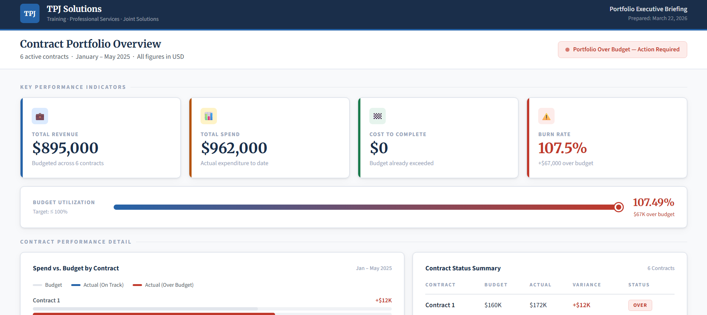
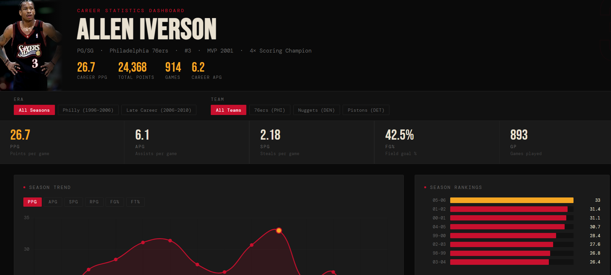

Data Analyst | Power BI | Business Intelligence
Information Systems student with hands-on experience building dashboards and analyzing data to support business decisions. I focus on turning raw data into clear, actionable insights using Power BI and Excel.
I am currently pursuing a degree in Information Systems with a strong focus on data analytics and business intelligence. I build dashboards, analyze structured data, and translate results into insights that help organizations make better decisions.
Power BI | Excel

Built an interactive dashboard to track client performance, contract value, pipeline status, and revenue trends. Designed to improve visibility and support better business decision-making.
View ProjectPower BI | Data Visualization

Built a sports analytics dashboard analyzing Allen Iverson’s career performance and scoring trends.
View Project